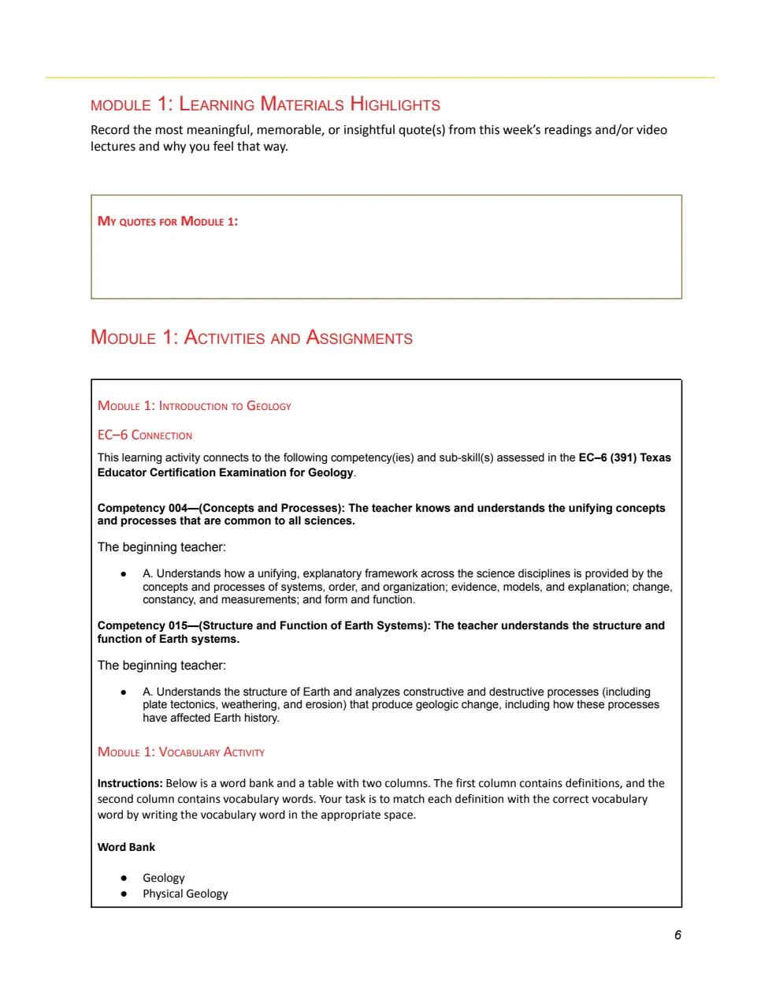
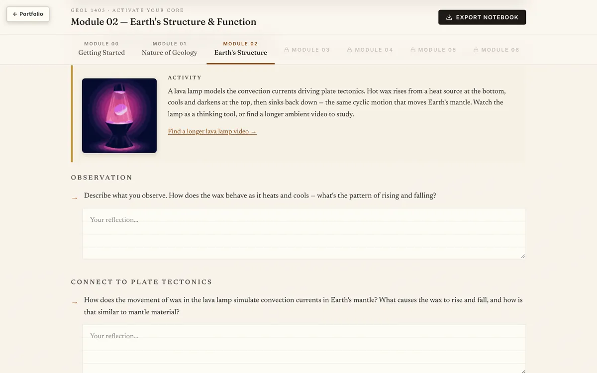

Curriculum design
GEOL 1403: Activate Your Core
A course workbook and an interactive notebook for Physical Geology at Dallas College. Both are built for students who plan to teach elementary school, and both turn each module into a cycle of planning, monitoring, and evaluating their own learning.
- Project type
- Course companion workbook and interactive notebook
- Audience
- GEOL 1403 students preparing for the Texas Core Subjects EC‑6 (391) certification
- My role
- Workbook author; notebook design and build
- Status
- Professional project iDesign, for Dallas College
- Problem
- Future teachers take Physical Geology as a core course. A read-then-quiz structure does little to show how the content connects to their certification exam, and it invites passive study.
- Deliverables
- Printable workbook (23-page draft covering the course introduction and Modules 1 and 2); interactive notebook with Modules 00 to 02 built and 03 to 08 marked as coming
- Tools
- Workbook delivered as a PDF; notebook built in React with Tailwind, running in the browser
- Course text
- Readings keyed to the course textbook and its chapter slide decks
What is shown here. The workbook is a pre-final development draft: bracketed notes such as "[Overview icon]" mark where artwork is placed in final production. The notebook covers the same opening modules in interactive form. Neither includes student data.

The problem
Many students in GEOL 1403 are working toward the Texas Core Subjects EC‑6 certification, which tests science content alongside teaching knowledge. A standard course treats geology as content to be covered: read the chapter, take the quiz. Two things get lost. Students rarely see which certification competencies a reading or lab is building, and they get little practice watching their own learning, which is a habit they will later need to teach.
The workbook states its goals directly: help students identify their achievements and challenges, find the strategies that work for them, connect content to course outcomes and EC‑6 competencies, and build a review tool for the certification exam.
Analysis
Two inputs shape every page of the deliverables: the course's module structure, with its textbook sections and slide decks, and the EC‑6 (391) competency statements. Each reading is paired with key questions that push past recall toward explanation, such as how Earth's internal structure drives plate tectonics, volcanism, and earthquakes, and each activity is paired with the competencies it supports.
The audience shaped the format. Prompts are short and structured so they can be finished in one sitting, and reflection is presented as a routine so that future teachers see it modeled. The sequence follows research on self-regulated learning: plan before the module, monitor partway through, evaluate after the assessment.
This is a retrospective description of the reasoning visible in the deliverables. Client meeting notes and requirements documents are not part of this portfolio.
Alignment
Every activity carries an "EC‑6 Connection" box quoting the competency and sub-skill it builds. Module 1's activities, for example, connect to Competency 004 (unifying concepts and processes across the sciences) and Competency 015 (structure and function of Earth systems).
| Part | What the student does | Purpose |
|---|---|---|
| Module overview | Previews the module, answers metacognitive-moment questions, sets personal goals and schedules study time | Plan |
| Learning materials | Takes reading notes, answers key questions, records meaningful quotes | Comprehension in the student's own words |
| Activities | Completes hands-on work tagged to EC‑6 competencies, followed by reflect-and-respond questions | Application, with a visible link to certification |
| Monitor your progress | Checks strategies, pace, and understanding mid-module | Monitor |
| Quiz wrapper | After the quiz, reviews how they prepared, what worked, and patterns in errors | Evaluate |
| Wrap-up and Core Gallery | Names the module's key learning and selects one work piece for the gallery | Evaluate, and build an exam review collection |
Design decisions
-
Build every module around plan, monitor, and evaluate
- Design challenge
- Reflection prompts scattered through a course tend to be skipped, and students don't connect them to how they study.
- Decision
- Use the same three checkpoints in every module: a metacognitive moment before, a progress check in the middle, and a quiz wrapper plus wrap-up after.
- Rationale
- A predictable cycle makes self-monitoring a routine. For future teachers it also models a practice they can use with their own students.
- Implementation
- The same prompts appear in the workbook and the notebook, so the two formats can be used interchangeably within a course.
-
Quote the certification competency on every activity
- Design challenge
- Students preparing for EC‑6 see geology as a requirement to get through, separate from the exam they care about.
- Decision
- Attach an EC‑6 Connection box to each activity with the competency and sub-skill text written out in full.
- Rationale
- Showing the exact exam language makes the purpose of each activity concrete and gives students the vocabulary of the standard they will be tested on.
- Implementation
- In the notebook, a competency-mapping section in Module 02 asks students to note what they knew before and after the module for each competency.
-
Collect one work piece per module into a Core Gallery
- Design challenge
- By the end of the semester, students have a stack of graded assignments and no structured way to review for the certification exam.
- Decision
- End each module by asking students to choose the piece that best shows their learning and archive it in a second workbook section, My Core Gallery.
- Rationale
- Choosing the piece is itself an evaluation step, and the gallery becomes a personal review set organized by module.
- Implementation
- Section II of the workbook holds one gallery page per module; the notebook keeps a Core Gallery Archive field in each wrap-up.
-
Carry open questions into the next module
- Design challenge
- On paper, a student who writes down what still confuses them has no prompt to come back to it.
- Decision
- In the notebook, add a "Carrying Forward" step that saves unresolved questions and shows them at the start of the next module.
- Rationale
- Making the follow-through visible turns a reflection into an action the student can track.
- Implementation
- Each carried question can be marked as resolved in a later module, and the full notebook, including responses, exports to a Markdown file.
- Limitation
- Saving depends on the browser's local storage, so entries stay on the device where they were written.
From workbook to notebook
I wrote the workbook first, as the course companion, and then built the notebook from the same structure and prompts. The notebook adds what paper can't: flip cards for each module's key terms with a "mark known" tracker, activities with immediate feedback, and the carry-forward questions. Activities from the workbook became interactive versions:
- Layers of Time. A stratigraphy game, adapted from the American Museum of Natural History's OLogy game, in which students order rock layers from oldest to newest using Steno's principles. It has three difficulty levels, and each layer can be moved with buttons as well as dragged.
- Lava lamp convection model. Students observe the lamp, then connect what they see to convection currents in Earth's mantle.
- Plate boundaries. Students classify four real boundaries, including the Himalayas and the Juan de Fuca plate, and give their reasoning.
Technical fix made during this portfolio review
The notebook was written against a storage interface that the portfolio's host does not provide, so student entries were not being saved between visits. In October 2026 I added a small adapter that stores entries in the browser's local storage. I tested it by entering a response, reloading the page, and confirming the response returned; the same test against the earlier version lost the entry.
Selected design artifacts
- Workbook draft (PDF) (opens in a new tab)
Shows the full module pattern on paper, including EC‑6 Connection boxes, key questions, and the Core Gallery section.
- Interactive notebook (opens in a new tab)
The same structure translated to the web, with the added interactions and the export.
The deliverables


The workbook is a 23-page draft. Its table of contents lays out all eight course modules; this draft develops the course introduction and Modules 1 and 2 in full. The notebook mirrors those three modules and shows Modules 03 to 08 as locked.
Evaluation
CompletedFunctional testing of the notebook's save behavior, described above. Client review and student use are not documented in this portfolio, so no learning outcomes are reported.
ProposedIn a course section, I would look at how many students complete the monitor and quiz-wrapper prompts across the semester, whether quiz-wrapper responses name specific strategy changes over time, and how students rate the Core Gallery as a review tool before the EC‑6 exam. Instructor review of a sample of reflections would show whether the prompts produce reflection or one-line answers.
Status and lessons
Status. The workbook shown is a pre-final draft; final visual production was a separate step. The notebook has three of nine modules built.
What works. The repeating structure means a student who has done one module knows how to approach the next, and the EC‑6 language gives the course a clear purpose for this audience.
What I would watch. Prompt fatigue. Each module asks for a lot of writing, and the evaluation above would show which prompts students skip and whether some should become optional.